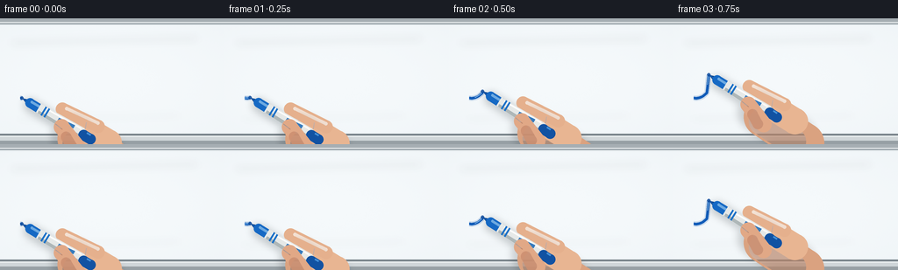
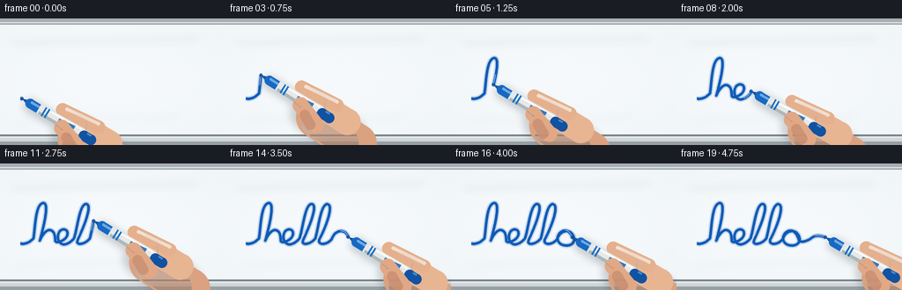

CODING AGENTS AS PIXEL WORLD MODELS
traex/GPT-5.6-Sol · phygen_032
点击播放 · 原生 RGB 像素
逐轮保存的候选
回放视频、检查图与代码变化。
每份候选均可单独播放。实际图片检查记录在下方工具轨迹中。
候选 01播放与检查图
点击播放 · 原生 RGB 像素


展开代码变化
--- 上一保存版本
+++ 本次保存版本
@@ -0,0 +1,207 @@
+from pathlib import Path
+import math
+import numpy as np
+from PIL import Image, ImageDraw, ImageFilter
+import artifact_io
+
+W, H, N = 256, 144, 20
+S = 4
+rng = np.random.default_rng(32032)
+
+
+def cubic(p0, p1, p2, p3, n=24):
+ t = np.linspace(0, 1, n, endpoint=False)[:, None]
+ omt = 1 - t
+ pts = omt**3*np.array(p0) + 3*omt**2*t*np.array(p1) + 3*omt*t**2*np.array(p2) + t**3*np.array(p3)
+ return [tuple(x) for x in pts]
+
+# One uninterrupted, hand-written cursive âhelloâ, constructed from smooth cubic strokes.
+segments = [
+ ((23,91),(30,92),(34,89),(38,85)), # entry
+ ((38,85),(40,73),(40,48),(48,45)), # h up
+ ((48,45),(57,42),(49,73),(45,88)), # h down
+ ((45,88),(50,76),(57,72),(61,79)), # h shoulder
+ ((61,79),(64,85),(60,91),(67,89)),
+ ((67,89),(78,86),(79,76),(73,75)), # e loop
+ ((73,75),(66,74),(63,85),(68,90)),
+ ((68,90),(73,95),(81,89),(84,85)),
+ ((84,85),(88,73),(90,48),(97,46)), # first l up
+ ((97,46),(106,45),(95,72),(88,87)),
+ ((88,87),(85,94),(97,92),(102,85)),
+ ((102,85),(106,70),(108,48),(115,46)), # second l up
+ ((115,46),(124,46),(113,74),(106,87)),
+ ((106,87),(105,94),(117,92),(121,85)),
+ ((121,85),(124,76),(134,74),(138,81)), # o top
+ ((138,81),(143,89),(136,95),(128,93)),
+ ((128,93),(119,91),(119,81),(126,77)),
+ ((126,77),(134,73),(138,84),(139,88)),
+ ((139,88),(143,90),(149,88),(154,84)), # flourish
+ ((154,84),(159,81),(163,82),(169,84)),
+]
+path = []
+for seg in segments:
+ path.extend(cubic(*seg, n=20))
+path.append(segments[-1][-1])
+path = np.asarray(path, dtype=float)
+# Re-sample by arc length for natural, steady tip speed.
+d = np.linalg.norm(np.diff(path, axis=0), axis=1)
+cum = np.r_[0, np.cumsum(d)]
+length = cum[-1]
+svals = np.linspace(0, length, 1100)
+px = np.interp(svals, cum, path[:,0])
+py = np.interp(svals, cum, path[:,1])
+curve = np.c_[px,py]
+
+
+def scpt(p): return (int(round(p[0]*S)), int(round(p[1]*S)))
+def poly(points): return [scpt(p) for p in points]
+
+def vecpt(a, u, amount, v=(0,0), side=0):
+ return (a[0]+u[0]*amount+v[0]*side, a[1]+u[1]*amount+v[1]*side)
+
+def capsule(draw, a, b, width, fill, joint='curve'):
+ draw.line([scpt(a), scpt(b)], fill=fill, width=max(1,int(width*S)), joint=joint)
+ r=width*S/2
+ for p in (a,b):
+ q=scpt(p)
+ draw.ellipse((int(q[0]-r),int(q[1]-r),int(q[0]+r),int(q[1]+r)), fill=fill)
+
+def make_board():
+ hh, ww = H*S, W*S
+ yy, xx = np.mgrid[0:hh,0:ww]
+ # Cool-white enamel with a restrained center glow and subtle fixed surface grain.
+ glow = 3.4*np.exp(-(((xx-ww*.45)/(ww*.75))**2 + ((yy-hh*.48)/(hh*.85))**2))
+ edge = 2.7*((yy-hh*.5)/(hh*.5))**2 + 1.1*((xx-ww*.5)/(ww*.5))**2
+ grain = rng.normal(0,0.42,(hh,ww))
+ base = np.empty((hh,ww,3),dtype=np.float32)
+ base[...,0] = 242 + glow - edge + grain
+ base[...,1] = 246 + glow - edge*.7 + grain
+ base[...,2] = 248 + glow - edge*.45 + grain
+ base = np.clip(base,0,255).astype(np.uint8)
+ im=Image.fromarray(base,'RGB')
+ dr=ImageDraw.Draw(im)
+ # Aluminum frame at top; thin dark gasket makes the board plane explicit.
+ dr.rectangle((0,0,ww,4*S), fill=(166,174,179))
+ dr.rectangle((0,4*S,ww,6*S), fill=(218,223,225))
+ dr.line((0,6*S,ww,6*S), fill=(127,139,146), width=S)
+ dr.line((0,7*S,ww,7*S), fill=(228,234,236), width=S)
+ # Tiny specular streaks and faint traces of previous cleaning.
+ ghost=Image.new('RGBA',(ww,hh),(0,0,0,0)); gd=ImageDraw.Draw(ghost)
+ gd.line(poly([(14,28),(224,23)]), fill=(255,255,255,36), width=2*S)
+ gd.line(poly([(22,115),(204,111)]), fill=(183,200,210,12), width=2*S)
+ ghost=ghost.filter(ImageFilter.GaussianBlur(4*S))
+ im=Image.alpha_composite(im.convert('RGBA'),ghost)
+ # Bottom aluminum marker tray.
+ dr=ImageDraw.Draw(im)
+ dr.rectangle((0,132*S,ww,134*S), fill=(117,128,135,255))
+ dr.rectangle((0,134*S,ww,140*S), fill=(208,214,217,255))
+ dr.rectangle((0,140*S,ww,144*S), fill=(151,160,165,255))
+ dr.line((0,135*S,ww,135*S), fill=(239,242,243,255), width=S)
+ return im
+
+BOARD=make_board()
+
+
+def draw_marker_and_hand(im, p, frame_index):
+ # Marker is held at a believable writing angle, with a subtle breathing/hand wobble.
+ ang = math.radians(31 + 1.1*math.sin(frame_index*.62))
+ u=(math.cos(ang), math.sin(ang)) # tip -> back of marker
+ v=(math.sin(ang), -math.cos(ang)) # visually upper side
+
+ # Soft cast shadow: tight at felt tip, broader below hand.
+ sh=Image.new('RGBA', im.size,(0,0,0,0)); sd=ImageDraw.Draw(sh)
+ off=(3.0,4.3)
+ def o(q): return (q[0]+off[0],q[1]+off[1])
+ capsule(sd,o(vecpt(p,u,8)),o(vecpt(p,u,88)),15,(39,55,65,58))
+ capsule(sd,o(vecpt(p,u,65,v,-4)),o(vecpt(p,u,116,v,-6)),45,(48,56,61,52))
+ sh=sh.filter(ImageFilter.GaussianBlur(4.0*S))
+ im.alpha_composite(sh)
+
+ # Base of the hand, behind the barrel.
+ hand=Image.new('RGBA', im.size,(0,0,0,0)); hd=ImageDraw.Draw(hand)
+ wrist_a=vecpt(p,u,79,v,-7); wrist_b=vecpt(p,u,133,v,-9)
+ capsule(hd,wrist_a,wrist_b,47,(218,162,128,255))
+ # palm warm shadow and upper highlight
+ capsule(hd,vecpt(p,u,80,v,-13),vecpt(p,u,121,v,-14),31,(201,140,107,150))
+ capsule(hd,vecpt(p,u,76,v,7),vecpt(p,u,111,v,7),30,(232,181,146,255))
+ # Index finger approaches the barrel from above.
+ idx0=vecpt(p,u,91,v,17); idx1=vecpt(p,u,46,v,13)
+ capsule(hd,idx0,idx1,15,(229,176,141,255))
+ capsule(hd,vecpt(p,u,89,v,20),vecpt(p,u,50,v,16),4,(244,201,170,120))
+ # crease at index knuckle
+ hd.line([scpt(vecpt(p,u,77,v,14)),scpt(vecpt(p,u,80,v,7))],fill=(166,105,81,95),width=S)
+ im.alpha_composite(hand)
+
+ # Marker itself: dark felt point, blue collar, white cylindrical body.
+ marker=Image.new('RGBA',im.size,(0,0,0,0)); md=ImageDraw.Draw(marker)
+ # felt nib, tapered precisely to the current ink endpoint
+ md.polygon(poly([p, vecpt(p,u,13,v,4.4), vecpt(p,u,13,v,-4.4)]),fill=(12,67,137,255))
+ md.polygon(poly([p, vecpt(p,u,11,v,1.3), vecpt(p,u,12,v,-2.3)]),fill=(20,90,175,255))
+ # collar
+ a=vecpt(p,u,11); b=vecpt(p,u,25)
+ capsule(md,a,b,11,(22,105,196,255))
+ capsule(md,vecpt(p,u,12,v,2),vecpt(p,u,24,v,2),3,(70,153,229,180))
+ # white barrel polygon, gently wider toward rear
+ md.polygon(poly([vecpt(p,u,22,v,5.5),vecpt(p,u,78,v,7.0),vecpt(p,u,84,v,5.2),
+ vecpt(p,u,84,v,-5.2),vecpt(p,u,78,v,-7.0),vecpt(p,u,22,v,-5.5)]),
+ fill=(230,233,232,255))
+ # barrel shade and highlight
+ md.polygon(poly([vecpt(p,u,24,v,-5.4),vecpt(p,u,80,v,-6.7),vecpt(p,u,84,v,-4.8),
+ vecpt(p,u,84,v,-1.7),vecpt(p,u,24,v,-2.3)]),fill=(174,183,184,255))
+ md.line([scpt(vecpt(p,u,27,v,3.5)),scpt(vecpt(p,u,76,v,4.9))],fill=(255,255,255,235),width=2*S)
+ # blue branding/rings unmistakably identify ink color
+ for z in (29,33):
+ md.line([scpt(vecpt(p,u,z,v,5.7)),scpt(vecpt(p,u,z,v,-5.7))],fill=(27,112,199,255),width=2*S)
+ md.polygon(poly([vecpt(p,u,48,v,2.5),vecpt(p,u,68,v,4.6),vecpt(p,u,68,v,0.5),vecpt(p,u,48,v,-1.0)]),fill=(35,117,194,230))
+ # end cap
+ capsule(md,vecpt(p,u,82),vecpt(p,u,91),12,(18,82,162,255))
+ md.line([scpt(vecpt(p,u,84,v,4)),scpt(vecpt(p,u,89,v,4))],fill=(69,145,217,255),width=2*S)
+ im.alpha_composite(marker)
+
+ # Thumb and middle finger close around barrel, in front of it.
+ fg=Image.new('RGBA',im.size,(0,0,0,0)); fd=ImageDraw.Draw(fg)
+ thumb0=vecpt(p,u,83,v,-15); thumb1=vecpt(p,u,56,v,-5)
+ capsule(fd,thumb0,thumb1,18,(225,168,134,255))
+ # thumbnail and small contact shadow
+ capsule(fd,vecpt(p,u,79,v,-17),vecpt(p,u,67,v,-12),7,(242,198,170,255))
+ fd.line([scpt(vecpt(p,u,58,v,-7)),scpt(vecpt(p,u,48,v,-6))],fill=(151,96,76,110),width=S)
+ # lower gripping finger peeking around
+ capsule(fd,vecpt(p,u,77,v,-18),vecpt(p,u,66,v,-12),12,(205,144,113,220))
+ im.alpha_composite(fg)
+
+
+def render_frame(i):
+ im=BOARD.copy()
+ # slight ease-in/out without interrupting the stroke
+ q=i/(N-1)
+ progress=q*q*(3-2*q)
+ progress=0.004 + 0.996*progress
+ idx=max(1,min(len(curve)-1,int(progress*(len(curve)-1))))
+ pts=curve[:idx+1]
+ p=curve[idx]
+
+ # Ink is fixed to the board and accumulates exactly behind the contacting nib.
+ ink=Image.new('RGBA',im.size,(0,0,0,0)); idr=ImageDraw.Draw(ink)
+ if len(pts)>1:
+ scaled=[scpt(x) for x in pts]
+ # minute feather halo plus saturated blue core
+ idr.line(scaled,fill=(23,93,174,52),width=6*S,joint='curve')
+ idr.line(scaled,fill=(15,91,184,255),width=3*S,joint='curve')
+ # wet, glossy highlight only along the newest few millimeters
+ tail=pts[max(0,len(pts)-25):]
+ idr.line([scpt((x[0]-0.25,x[1]-0.35)) for x in tail],fill=(68,145,218,170),width=S,joint='curve')
+ im=Image.alpha_composite(im,ink)
+
+ # A small compressed dark spot at contact reinforces marker/board interaction.
+ ct=Image.new('RGBA',im.size,(0,0,0,0)); cd=ImageDraw.Draw(ct)
+ r=1.8*S; sp=scpt(p)
+ cd.ellipse((sp[0]-r,sp[1]-r,sp[0]+r,sp[1]+r),fill=(10,72,155,210))
+ im=Image.alpha_composite(im,ct)
+ draw_marker_and_hand(im,p,i)
+
+ # Downsample gives clean antialiased contours, maintaining RGB output.
+ return np.asarray(im.convert('RGB').resize((W,H),Image.Resampling.LANCZOS),dtype=np.uint8)
+
+frames=np.stack([render_frame(i) for i in range(N)])
+assert frames.shape==(20,144,256,3) and frames.dtype==np.uint8
+artifact_io.save(frames,Path(__file__).resolve().parent)
可观测工具轨迹
实际执行的命令与返回图片。
命令 1exit 0
/bin/bash -lc "ls -la && printf '\\n--- prompt.txt ---\\n' && cat prompt.txt && printf '\\n--- GENERATION_RULES.md ---\\n' && cat GENERATION_RULES.md && printf '\\n--- task_spec.json ---\\n' && cat task_spec.json"
命令 2exit 0
/bin/bash -lc "sed -n '1,260p' artifact_io.py"
命令 3exit 0
/bin/bash -lc "cat > generate.py <<'PY'
from pathlib import Path
import math
import numpy as np
from PIL import Image, ImageDraw, ImageFilter
import artifact_io
W, H, N = 256, 144, 20
S = 4
rng = np.random.default_rng(32032)
def cubic(p0, p1, p2, p3, n=24):
t = np.linspace(0, 1, n, endpoint=False)[:, None]
omt = 1 - t
pts = omt**3*np.array(p0) + 3*omt**2*t*np.array(p1) + 3*omt*t**2*np.array(p2) + t**3*np.array(p3)
return [tuple(x) for x in pts]
# One uninterrupted, hand-written cursive âhelloâ, constructed from smooth cubic strokes.
segments = [
((23,91),(30,92),(34,89),(38,85)), # entry
((38,85),(40,73),(40,48),(48,45)), # h up
((48,45),(57,42),(49,73),(45,88)), # h down
((45,88),(50,76),(57,72),(61,79)), # h shoulder
((61,79),(64,85),(60,91),(67,89)),
((67,89),(78,86),(79,76),(73,75)), # e loop
((73,75),(66,74),(63,85),(68,90)),
((68,90),(73,95),(81,89),(84,85)),
((84,85),(88,73),(90,48),(97,46)), # first l up
((97,46),(106,45),(95,72),(88,87)),
((88,87),(85,94),(97,92),(102,85)),
((102,85),(106,70),(108,48),(115,46)), # second l up
((115,46),(124,46),(113,74),(106,87)),
((106,87),(105,94),(117,92),(121,85)),
((121,85),(124,76),(134,74),(138,81)), # o top
((138,81),(143,89),(136,95),(128,93)),
((128,93),(119,91),(119,81),(126,77)),
((126,77),(134,73),(138,84),(139,88)),
((139,88),(143,90),(149,88),(154,84)), # flourish
((154,84),(159,81),(163,82),(169,84)),
]
path = []
for seg in segments:
path.extend(cubic(*seg, n=20))
path.append(segments[-1][-1])
path = np.asarray(path, dtype=float)
# Re-sample by arc length for natural, steady tip speed.
d = np.linalg.norm(np.diff(path, axis=0), axis=1)
cum = np.r_[0, np.cumsum(d)]
length = cum[-1]
svals = np.linspace(0, length, 1100)
px = np.interp(svals, cum, path[:,0])
py = np.interp(svals, cum, path[:,1])
curve = np.c_[px,py]
def scpt(p): return (int(round(p[0]*S)), int(round(p[1]*S)))
def poly(points): return [scpt(p) for p in points]
def vecpt(a, u, amount, v=(0,0), side=0):
return (a[0]+u[0]*amount+v[0]*side, a[1]+u[1]*amount+v[1]*side)
def capsule(draw, a, b, width, fill, joint='curve'):
draw.line([scpt(a), scpt(b)], fill=fill, width=max(1,int(width*S)), joint=joint)
r=width*S/2
for p in (a,b):
q=scpt(p)
draw.ellipse((int(q[0]-r),int(q[1]-r),int(q[0]+r),int(q[1]+r)), fill=fill)
def make_board():
hh, ww = H*S, W*S
yy, xx = np.mgrid[0:hh,0:ww]
# Cool-white enamel with a restrained center glow and subtle fixed surface grain.
glow = 3.4*np.exp(-(((xx-ww*.45)/(ww*.75))**2 + ((yy-hh*.48)/(hh*.85))**2))
edge = 2.7*((yy-hh*.5)/(hh*.5))**2 + 1.1*((xx-ww*.5)/(ww*.5))**2
grain = rng.normal(0,0.42,(hh,ww))
base = np.empty((hh,ww,3),dtype=np.float32)
base[...,0] = 242 + glow - edge + grain
base[...,1] = 246 + glow - edge*.7 + grain
base[...,2] = 248 + glow - edge*.45 + grain
base = np.clip(base,0,255).astype(np.uint8)
im=Image.fromarray(base,'RGB')
dr=ImageDraw.Draw(im)
# Aluminum frame at top; thin dark gasket makes the board plane explicit.
dr.rectangle((0,0,ww,4*S), fill=(166,174,179))
dr.rectangle((0,4*S,ww,6*S), fill=(218,223,225))
dr.line((0,6*S,ww,6*S), fill=(127,139,146), width=S)
dr.line((0,7*S,ww,7*S), fill=(228,234,236), width=S)
# Tiny specular streaks and faint traces of previous cleaning.
ghost=Image.new('RGBA',(ww,hh),(0,0,0,0)); gd=ImageDraw.Draw(ghost)
gd.line(poly([(14,28),(224,23)]), fill=(255,255,255,36), width=2*S)
gd.line(poly([(22,115),(204,111)]), fill=(183,200,210,12), width=2*S)
ghost=ghost.filter(ImageFilter.GaussianBlur(4*S))
im=Image.alpha_composite(im.convert('RGBA'),ghost)
# Bottom aluminum marker tray.
dr=ImageDraw.Draw(im)
dr.rectangle((0,132*S,ww,134*S), fill=(117,128,135,255))
dr.rectangle((0,134*S,ww,140*S), fill=(208,214,217,255))
dr.rectangle((0,140*S,ww,144*S), fill=(151,160,165,255))
dr.line((0,135*S,ww,135*S), fill=(239,242,243,255), width=S)
return im
BOARD=make_board()
def draw_marker_and_hand(im, p, frame_index):
# Marker is held at a believable writing angle, with a subtle breathing/hand wobble.
ang = math.radians(31 + 1.1*math.sin(frame_index*.62))
u=(math.cos(ang), math.sin(ang)) # tip -> back of marker
v=(math.sin(ang), -math.cos(ang)) # visually upper side
# Soft cast shadow: tight at felt tip, broader below hand.
sh=Image.new('RGBA', im.size,(0,0,0,0)); sd=ImageDraw.Draw(sh)
off=(3.0,4.3)
def o(q): return (q[0]+off[0],q[1]+off[1])
capsule(sd,o(vecpt(p,u,8)),o(vecpt(p,u,88)),15,(39,55,65,58))
capsule(sd,o(vecpt(p,u,65,v,-4)),o(vecpt(p,u,116,v,-6)),45,(48,56,61,52))
sh=sh.filter(ImageFilter.GaussianBlur(4.0*S))
im.alpha_composite(sh)
# Base of the hand, behind the barrel.
hand=Image.new('RGBA', im.size,(0,0,0,0)); hd=ImageDraw.Draw(hand)
wrist_a=vecpt(p,u,79,v,-7); wrist_b=vecpt(p,u,133,v,-9)
capsule(hd,wrist_a,wrist_b,47,(218,162,128,255))
# palm warm shadow and upper highlight
capsule(hd,vecpt(p,u,80,v,-13),vecpt(p,u,121,v,-14),31,(201,140,107,150))
capsule(hd,vecpt(p,u,76,v,7),vecpt(p,u,111,v,7),30,(232,181,146,255))
# Index finger approaches the barrel from above.
idx0=vecpt(p,u,91,v,17); idx1=vecpt(p,u,46,v,13)
capsule(hd,idx0,idx1,15,(229,176,141,255))
capsule(hd,vecpt(p,u,89,v,20),vecpt(p,u,50,v,16),4,(244,201,170,120))
# crease at index knuckle
hd.line([scpt(vecpt(p,u,77,v,14)),scpt(vecpt(p,u,80,v,7))],fill=(166,105,81,95),width=S)
im.alpha_composite(hand)
# Marker itself: dark felt point, blue collar, white cylindrical body.
marker=Image.new('RGBA',im.size,(0,0,0,0)); md=ImageDraw.Draw(marker)
# felt nib, tapered precisely to the current ink endpoint
md.polygon(poly([p, vecpt(p,u,13,v,4.4), vecpt(p,u,13,v,-4.4)]),fill=(12,67,137,255))
md.polygon(poly([p, vecpt(p,u,11,v,1.3), vecpt(p,u,12,v,-2.3)]),fill=(20,90,175,255))
# collar
a=vecpt(p,u,11); b=vecpt(p,u,25)
capsule(md,a,b,11,(22,105,196,255))
capsule(md,vecpt(p,u,12,v,2),vecpt(p,u,24,v,2),3,(70,153,229,180))
# white barrel polygon, gently wider toward rear
md.polygon(poly([vecpt(p,u,22,v,5.5),vecpt(p,u,78,v,7.0),vecpt(p,u,84,v,5.2),
vecpt(p,u,84,v,-5.2),vecpt(p,u,78,v,-7.0),vecpt(p,u,22,v,-5.5)]),
fill=(230,233,232,255))
# barrel shade and highlight
md.polygon(poly([vecpt(p,u,24,v,-5.4),vecpt(p,u,80,v,-6.7),vecpt(p,u,84,v,-4.8),
vecpt(p,u,84,v,-1.7),vecpt(p,u,24,v,-2.3)]),fill=(174,183,184,255))
md.line([scpt(vecpt(p,u,27,v,3.5)),scpt(vecpt(p,u,76,v,4.9))],fill=(255,255,255,235),width=2*S)
# blue branding/rings unmistakably identify ink color
for z in (29,33):
md.line([scpt(vecpt(p,u,z,v,5.7)),scpt(vecpt(p,u,z,v,-5.7))],fill=(27,112,199,255),width=2*S)
md.polygon(poly([vecpt(p,u,48,v,2.5),vecpt(p,u,68,v,4.6),vecpt(p,u,68,v,0.5),vecpt(p,u,48,v,-1.0)]),fill=(35,117,194,230))
# end cap
capsule(md,vecpt(p,u,82),vecpt(p,u,91),12,(18,82,162,255))
md.line([scpt(vecpt(p,u,84,v,4)),scpt(vecpt(p,u,89,v,4))],fill=(69,145,217,255),width=2*S)
im.alpha_composite(marker)
# Thumb and middle finger close around barrel, in front of it.
fg=Image.new('RGBA',im.size,(0,0,0,0)); fd=ImageDraw.Draw(fg)
thumb0=vecpt(p,u,83,v,-15); thumb1=vecpt(p,u,56,v,-5)
capsule(fd,thumb0,thumb1,18,(225,168,134,255))
# thumbnail and small contact shadow
capsule(fd,vecpt(p,u,79,v,-17),vecpt(p,u,67,v,-12),7,(242,198,170,255))
fd.line([scpt(vecpt(p,u,58,v,-7)),scpt(vecpt(p,u,48,v,-6))],fill=(151,96,76,110),width=S)
# lower gripping finger peeking around
capsule(fd,vecpt(p,u,77,v,-18),vecpt(p,u,66,v,-12),12,(205,144,113,220))
im.alpha_composite(fg)
def render_frame(i):
im=BOARD.copy()
# slight ease-in/out without interrupting the stroke
q=i/(N-1)
progress=q*q*(3-2*q)
progress=0.004 + 0.996*progress
idx=max(1,min(len(curve)-1,int(progress*(len(curve)-1))))
pts=curve[:idx+1]
p=curve[idx]
# Ink is fixed to the board and accumulates exactly behind the contacting nib.
ink=Image.new('RGBA',im.size,(0,0,0,0)); idr=ImageDraw.Draw(ink)
if len(pts)>1:
scaled=[scpt(x) for x in pts]
# minute feather halo plus saturated blue core
idr.line(scaled,fill=(23,93,174,52),width=6*S,joint='curve')
idr.line(scaled,fill=(15,91,184,255),width=3*S,joint='curve')
# wet, glossy highlight only along the newest few millimeters
tail=pts[max(0,len(pts)-25):]
idr.line([scpt((x[0]-0.25,x[1]-0.35)) for x in tail],fill=(68,145,218,170),width=S,joint='curve')
im=Image.alpha_composite(im,ink)
# A small compressed dark spot at contact reinforces marker/board interaction.
ct=Image.new('RGBA',im.size,(0,0,0,0)); cd=ImageDraw.Draw(ct)
r=1.8*S; sp=scpt(p)
cd.ellipse((sp[0]-r,sp[1]-r,sp[0]+r,sp[1]+r),fill=(10,72,155,210))
im=Image.alpha_composite(im,ct)
draw_marker_and_hand(im,p,i)
# Downsample gives clean antialiased contours, maintaining RGB output.
return np.asarray(im.convert('RGB').resize((W,H),Image.Resampling.LANCZOS),dtype=np.uint8)
frames=np.stack([render_frame(i) for i in range(N)])
assert frames.shape==(20,144,256,3) and frames.dtype==np.uint8
artifact_io.save(frames,Path(__file__).resolve().parent)
PY
python generate.py
ls -lh pixels.npz inspection.png index.html frames/00.png frames/19.png"视觉工具实际返回图片 1

视觉工具实际返回图片 2

保存候选 1 份；完成命令 3 次；可验证图片返回 2 张。原始 API 响应与完整日志保留在本地。